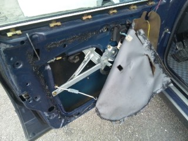
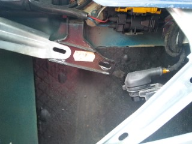
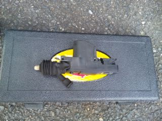
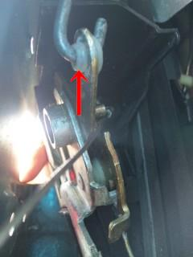
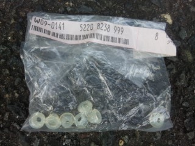
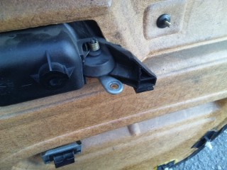
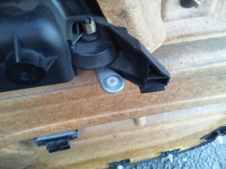

2010/10/31 ドアアクチュエーター・ヒンジのスリーブ交換
  とりあえず、内張りを外します。 ここにアクチュエーターがついている。 点検のために取り外した図 ネジ２つで固定されているだけだ。 |
 外した状態で動きを確認してみたが、アクチュエーターに問題はなさそうだ。
|
 矢印の白いのがそのスリーブ。 これは交換後の図 もともとついていたスリーブは、朽ち果ててカケラしか残っていなかった＾＾； こんな状態じゃアクチュエーターからの動力もうまく伝わりませんね。
|
 これがそのスリーブ（P/N52208238999） BMWのことだから、ドアロックassyでしか出ないと思っていたが、スリーブだけ出てきた。 前後左右で8個必要だ。
|
  内張りについているドアノブにも使われている。 こっちも朽ち果てる寸前だった。 どうりで少しノブにガタがあったわけだ。 ドアノブを引いたときの感触が滑らかになり、まるで高級車のようなフィーリングだ（笑 交換も簡単なので、内張りを外す機会があれば交換してみると良いだろう。 今のところロックピンが上がってこない症状は出ていない。 近いうちに残りのドアも交換しておこう。
|